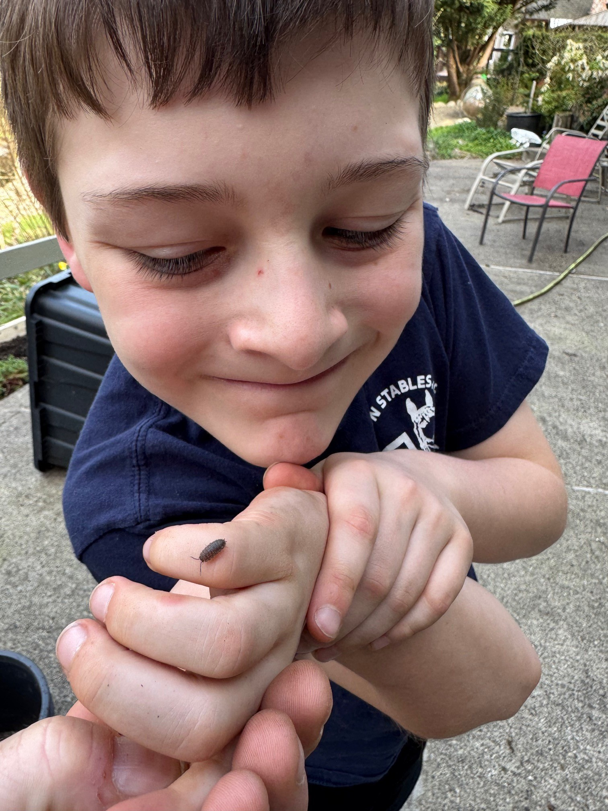
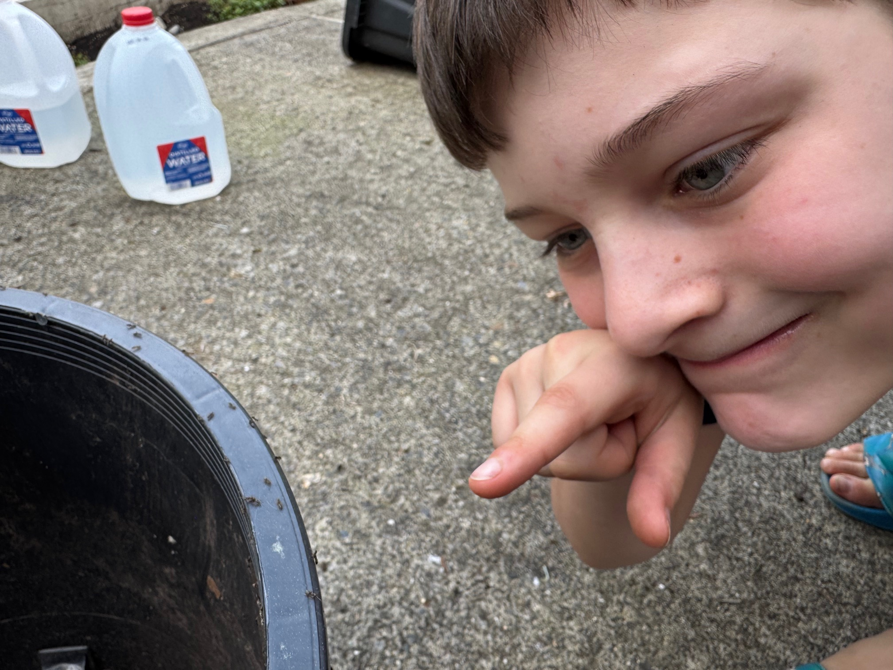

Olive's Guide to Sandy Bugs
by Malcolm
Malcolm says:
Hey Olive! I made this guide for you. Start with the friendly bugs — they're totally harmless. The more you find, the more you unlock. You got this.

